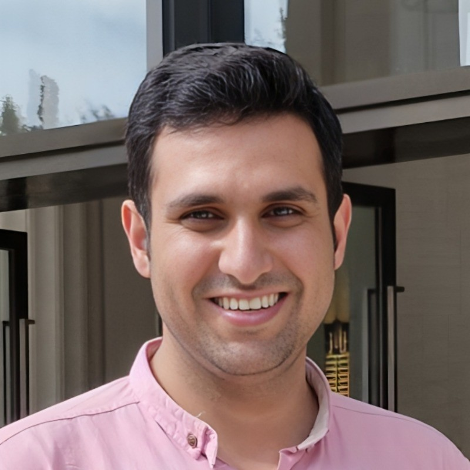

Mohammad Hossein Badiei
I work on robust optimization, information theory, federated learning, computer vision, and robotics, with a focus on building learning systems that remain reliable under uncertainty, heterogeneity, and adversarial conditions.

Research at the intersection of learning, optimization, and trustworthy autonomy.
My work spans robust and decentralized learning, adversarial resilience, generative modeling, autonomous systems, and AI for science. I am particularly interested in methods that combine theoretical structure with deployment-aware machine learning.
Robust & Federated Learning
Resilience to poisoning, heterogeneity, uncertainty, and distributed decision-making constraints.
Generative & Vision Models
Generative modeling and vision systems for scientific, biomedical, and engineering applications.
Optimization & Robotics
Constrained planning, model predictive control, and uncertainty-aware autonomous systems.
Simultaneous tri-degree program with two honours degrees.
M.Sc. in Electrical & Computer Engineering
University of Tehran · Electrical and Computer Engineering Department
US GPA 3.88/4
B.Sc. (+Honours) in Computer Engineering
Tehran Polytechnic (Amirkabir University of Technology) · Dual-Degree
Top 3%
B.Sc. (+Honours) in Electrical Engineering
Tehran Polytechnic (Amirkabir University of Technology) · Dual-Degree
Class Rank: 1st
Selected awards & distinctions.
National Electrical Engineering Olympiad Gold Medal
Center of Student Olympiad and International Exam Affairs of Iran · 2021
UNESCO Distinguished Young Scientist of Basic Science and Technology
UNESCO Club · 2023
Full Scholarship for AI Excellence Internship
Tsinghua University, China · 2024
Ranked 1st — 6th Young Scientists Festival
Mathematics and Computer Science · 2022
Simultaneous Dual Degree and Dual Level Honors
Iran's National Elites Foundation · 2018 & 2020
Ranked 1st in the B.Sc. Major
Tehran Polytechnic · 2020
Selected publications.
Publication metadata and citation counts below reflect the Google Scholar information supplied for this update.